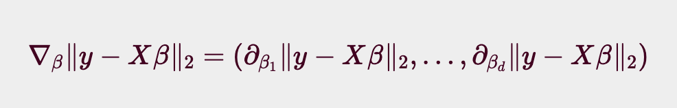

선형회귀
- 선형회귀 : 이루어진 데이터들 속에서 결곽값을 잘 내는 모델을 찾는 것
- 경사하강법
sklearn라이브러리- 회귀분석 방법도 있다. 링크
우리가 알아볼 것은 경사하강법이다!</br>
경사하강법으로 선형회귀 계수 구하기
- 선형회귀의 목적식 : ${\parallel y - X_\beta \parallel}_2$ (= $L_2$-norm)
- 선형회귀의 목적식을 최소화 하는 $\beta$를 찾는것이 목적!
다음과 같은 Gradient 벡터를 구해보자.

이 때 $\beta$ 의 k번째 계수에 해당하는 $\beta_k$를 가지고 목적식을 편미분하는 식을 풀어서 보면 아래와 같은 식이 된다.

여기서 조심할 점은, 일반적인 수학의 $L_2$ - norm 과 풀이 방식이 살짝 다르다는 것.
여기서 사용하는 $L_2 - norm$은 모델 학습에 사용되는 것이므로, n개의 데이터셋을 가지고 있다는 가정하에 출발한다. 따라서 단순히 $\sum_{i=1}^{n}$에 $\surd$을 바로 씌우는 것이 아닌, $1/n$ 로 형균을 내준 뒤에 씌어준다.
이 때에 사용되는 Loss는 RMSE (Root Mean Squared Error) 이다. 다음과 같은 도출과정을 따른다.
- 벡터의 거리는 $L_2-norm$ 으로 계산한다.
- SE(Sqaured Error) 는 각 데이터별로 정답과 예측 벡터의 차이를 $L_2-norm$ 제곱으로 계산한다.
- MSE (Mean Squared Error) 는 SE 를 데이터의 숫자만큼 나누어준다.(평균내기)
- RMSE (Root Mean Squared Error) 는 MSE 에 제곱근을 취해준다.
이를 계산하여 정리하면 다음과 같다.

따라서 이제, 목적식을 최소화하는 $\beta$ 를 구하는 경사하강법 알고리즘을 다음과 같이 표현할 수 있다.

- t를 반복적으로 계산하다 보면 목적식을 최소화하는 $\beta$ 를 구할 수 있음
- 이전과정에 비해, 다변수인 것을 제외히ㅏ면 모든 요소가 같음
- $\beta^{(t)}$ : t번째 단계에서의 coefficient
- $\lambda$ : 학습률 - 수렴속도 지정
- $\nabla_{\beta}$ : gradient vector
- $\lambda \nabla_{\beta} \parallel y-x\beta (t) \parallel$ : gradient factor
선형회귀의 목적식은 L2-norm 과 같고, 경사하강법에서 L2-norm 대신 L2-norm의 제곱을 사용하는 것도 가능하다. 둘은 동일한 결과를 가져온다.

경사하강법 기반 선형회귀 알고리즘
1
2
3
4
5
6
7
8
9
10
11
# Input: X, y, lr, T
# Output: beta
"""
norm: L2-norm을 계산하는 함수
lr: 학습률
T: 학습횟수
"""
for t in range(T): # eps로 사용가능, 지정된 시간의 종료조건
error = y - X @ beta
grad = - transpose(X) @ error # @: 행렬곱
beta = beta - lr * grad
위와 같은 경사하강법 알고리즘을 이용해, 무어-팬로즈 역행렬을 사용하지 않고도 계수 $\beta$ 를 찾을 수 있다.
1
2
3
4
5
6
7
8
9
10
11
12
13
14
15
# numpy를 활용한 경사하강법 수행 예시
import numpy as np
X = np.array([[1,1],[1,2],[2,2],[2,3]])
y = np.dot(X, np.array([1,2])) + 3
beta_gd = [10.1, 15.1, -6.5] # [1,2,3]이 정답 - 지금 값은 무작위 값
# intercept항 추가
# y 절편을 추가하면, y = ax + b의 b가 bias term의 역할을 해서 계산이 용이하다.
X_ = np.array([np.append(x,[1]) for x in X])
for t in range(5000):
error = y - X_ @ beta_gd
# error = error / np.linalg.norm(error)
grad = - np.transpose(X_) @ error
beta_gd = beta_gd - 0.01 * grad
print(beta_gd)
# [1.00000367 1.99999949 2.99999516]
lr 은 학습률에 관한것으로 실제로 학습에 지대한 영향을 끼친다. 학습률이 낮을 시 학습속도가 느려지며, 학습률이 크다면 불안정한 gredient 움직임이 발생한다.
경사하강법이 수렴하지 않을 때 - 확률적 경사하강법

이론적으로, 경사하강법은 미분가능하고 볼록(convex)한 함수에 대해서는, 적절한 학습률과 학습횟수를 선택했을 때 수렴이 보장되어있다.
특히, 선형회귀 목적식 ${\parallel y - X\beta \parallel}_2$ 는 회귀계수 $\beta$ 에 대해 볼록함수 이므로, 알고리즘을 충분히 돌렸을 경우 수렴이 보장된다.
그러나, 비선형회귀 문제의 경우 목적식이 볼록하지 않을 수 있으므로, 수렴이 항상 보장되지는 않는다.

특히 딥러닝을 사용하는 경우는 목적식이 대부분 볼록함수가 아니므로,
이 경우 일반적인 경사하강법이 아닌 확률적 경사하강법(SGD) 을 사용한다.
확률적 경사하강법은 모든 데이터를 사용해서 업데이트 하는 대신에, 데이터 하나 또는 일부를 활용하여 업데이트 하는 방식이다.
확률적 경사하강법의 원리 : 미니배치 연산
경사하강법 (GD) 는 전체 데이터를 이용하여 목적식을 계산한다.

반면 SGD는 미니배치를 가지고 계산한다. 따라서 매 step 마다 다른 미니배치를 사용할 때마다 목적식의 모양이 점점 바뀌게 된다.
즉, Local MiniMum (극소점) 을 탈출할 수 있다는 말!
하지만 간과하지 말아야 할 것이 있다.
극소점을 탈출할 수 있다는 말은 global minimum을 탈출할 수도 있다는 말이다.
- 이는
SGD의 단점 중 하나로, global minimum 근처까지는 빠르게 수렴하지만 정작 정확한 global minimum 극소값에는 도달하지 못하고 진동하는 경우가 많다. - 반면,
GD는 연산량과 시간이 많이 필요하지만 전체 배치를 통해 모든 점에서 일정한 목적식을 활용하여 global minimum 으로확실히수렴 가능하다. - 이와 같은
SGD의 문제점은 lr 을 점점 줄여나가는 방식으로 step size 를 줄임으로써 어느정도 해결할 수 있다.
SGD는 볼록이 아닌 목적식에서도 사용 가능하므로 경사하강법보다 머신러닝 학습에 더 효율적이다.
- 다만, 경사하강법처럼 정확하게 gradient 벡터를 계산해서 흐르는것이 아니므로, 이동방향이 좀 튀는 경향 이 있다.
- 그렇지만, 결국 데이터를 가지고 gradient 벡터를 계산해서 움직이기 때문에 최솟점으로 향한다는 것은 같다.
- 또한, 미니배치를 가지고 연산하므로, 각각의 gradient 벡터 계산에 있어서 연산속도가 훨씬 빠르다.
1
단, SGD에서는 기존의 경사하강법에서 고려했던 학습률(learning rate), 학습횟수(T)에 더해 미니배치 사이즈까지 고려하여 학습해야한다.
참고한 자료 :
https://blogik.netlify.app/BoostCamp/U_stage/05_gradient_descent/